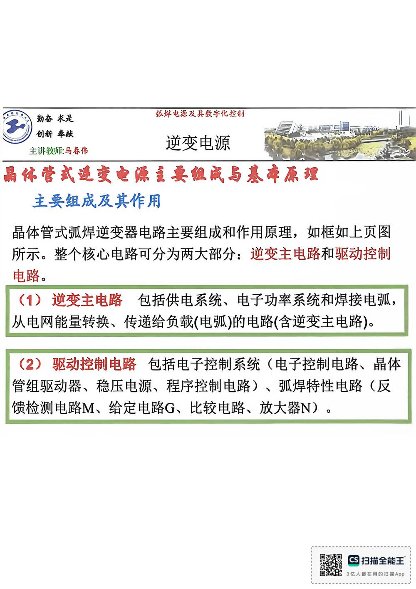

13 手写笔记/6~8周/h-w2-045 馈检测电路M、给定电路G、比较电路、放大器N）
h-w2-045 馈检测电路M、给定电路G、比较电路、放大器N）
📷 原图：
6~8周 焊接电源(差最后一节课)(1).pdf第 45 页（整页扫描，本库内嵌h-w2-045.jpg）
馈检测电路M、给定电路G、比较电路、放大器N）

本页文字（OCR 整理）
- 晶休管式连变电源主要组成与基本原理
- 主要组成及其作用
- 晶体管式弧焊逆变器电路主要组成和作用原理，如框如上页图
- 所示。整个核心电路可分为两大部分：逆变主电路和驱动控制
- （1）逆变主电路包括供电系统、电子功率系统和焊接电弧，
- 从电网能量转换、传递给负载（电弧）的电路（含逆变主电路）。
- （2）驱动控制电路包括电子控制系统（电子控制电路、晶体
- 管组驱动器、稳压电源、程序控制电路）、弧焊特性电路（反
- 馈检测电路M、给定电路G、比较电路、放大器N）。
本页重点（自动标记：含"定义/特点/要求/结论/公式"等，或与课件原句高度一致）
- 晶休管式连变电源主要组成与基本原理
- 晶体管式弧焊逆变器电路主要组成和作用原理，如框如上页图
OCR 说明
文字由 macOS Vision 识别手写体/翻拍页面得到，错字难免（如"弧"误识为"孤"）；重点标记据此推断，请以页图为准。
对应讲义页
关联
- ← 上一页 · 总览 · 下一页 →
- 讲义：00 第2章 基本电气特性 导航 · 概念：04 概念地图